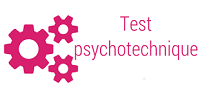
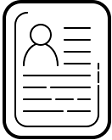
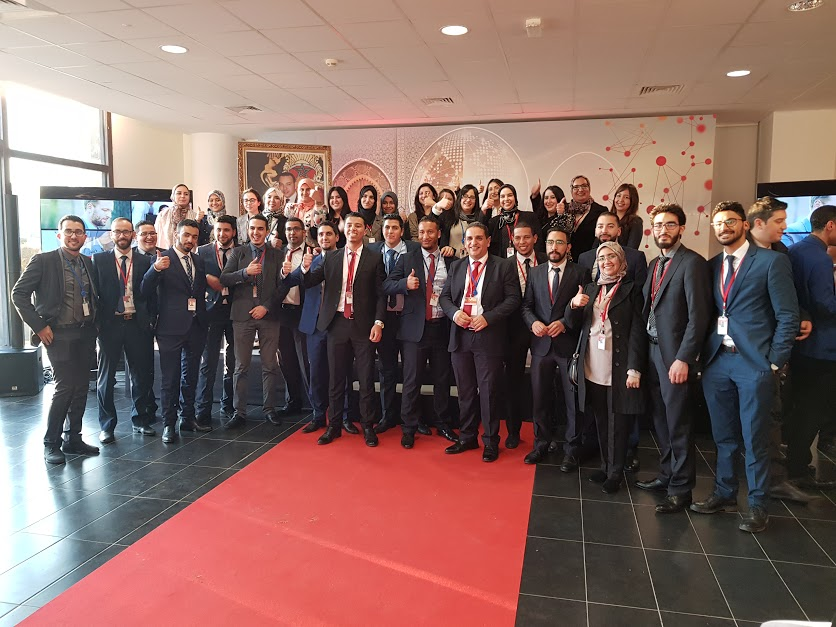
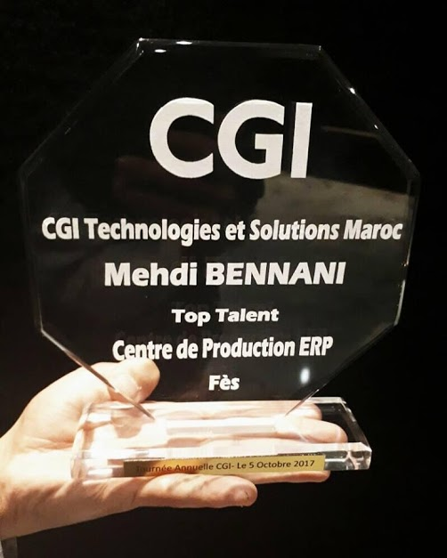
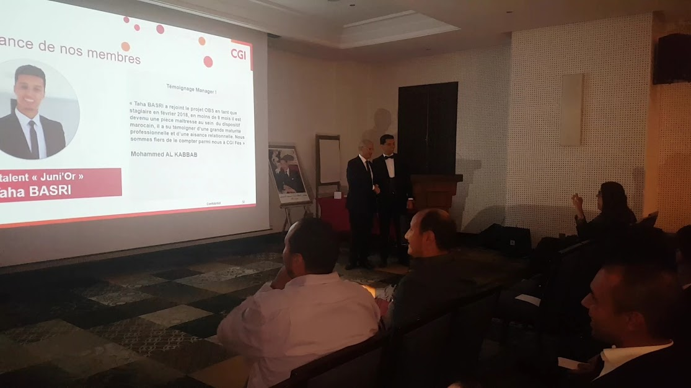

Compagnes de stages :A partir d'octobre
Un Mqliste, dans sa deuxième année de formation, commence déja à passer des entretiens de stage pré-ambauche, en fait nous retrouvons, à la faculté des sciences, des multinationales dans des sessions de recrutement organisées par les étudiants MQL.
TEST PsychoTechnique :

Les tests psychotechniques sont utilisés pour mesurer les aptitudes logiques, verbales et numériques de l'étudiant.
Ils mesurent les capacités de réaction, de réflexion, de concentration mais aussi la faculté à intégrer et à traiter l’information ou la stimulation.
TEST Technique :
Un entretien technique sur les différents aspects du developpement informatique
Entretien RH :

Les étudiants passent un entretien RH allant de 15 à 20 minutes, Le candidat doit mettre en avant son expérience, ses compétences et sa personnalité à travers la description de son parcours professionnel.
Galerie:
Journée Entrepreunariat: Novembre
Les étudiants MQL organisent une journée entrepreneuriat, dont des équipes de différents masters présentent leurs projets devant un jury pour une durée de 7 minutes, ci-dessous quelques images :
Cérémonie de remise de diplomes : Mars-Avril
La cérémonie de remise de diplômes est une cérémonie organisée afin de celebrer les jeunes diplomés, que la majorité ont déjâ des contrats CDI avec des multinationales notamment CGI,Capgemini,ATOS .... , Cliquez pour voir plus sur nos lauréats.

Les lauréats MQL ne s'arretent pas à l'insertion professionnelle mais excellent dans leurs postes professionnels et deviennent des éléments clé pour le developpement des multinationales. ils aident également les nouvelles générations( formations, informations ...) dans une solidarité familiale.


Evenements para-scolaire :
MQL dépasse les limtes de formation et éducation;
MQL est une équipe, une famille, un style de vie.